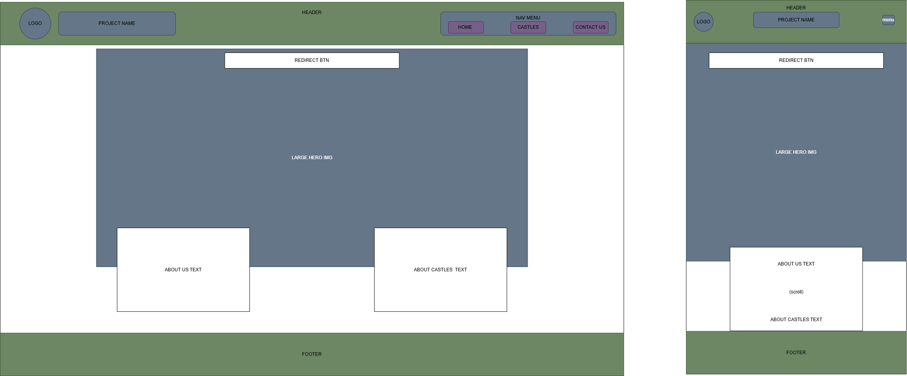
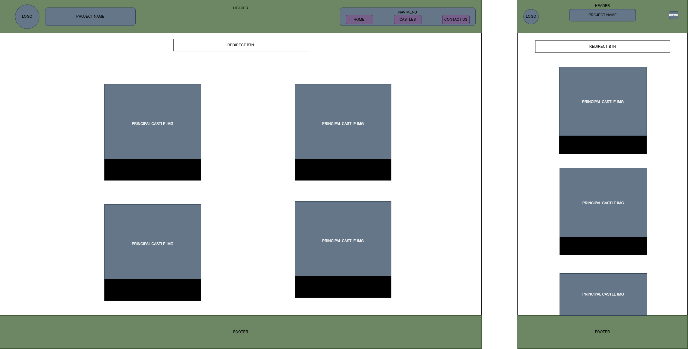
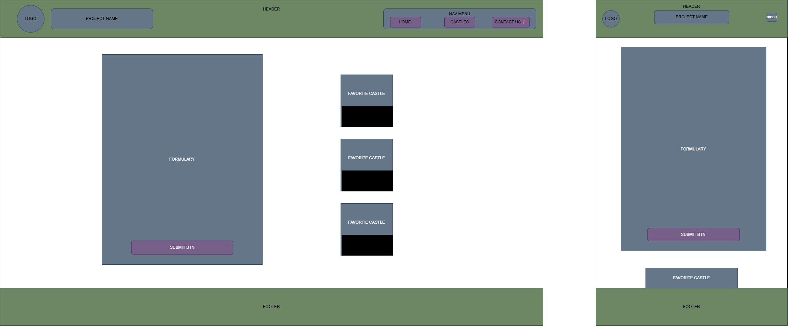

Site Name
"World Castles Explorer": This name represents a tourism company that helps castle enthusiasts learn about some of the world's most famous castles.
Site Purpose
This site provides the user with information about the most famous castles in the world and the opportunity to make a simple travel plan, as well as select their favorite castles from those presented.
Scenarios
Question 1: How can I save castles I would like to visit later?
Users will have the opportunity to like their favorite castles so they can remember those castles later.
Question 2: Where are these castles situated?
Each castle will be display as a card containing some relevant information such as location, etc.
Question 3: How can I plan a visit to one of these castles?
Users can complete a travel planning form to organize their future castle visits.
Color Schema
These are the color to be used on the page. I choosed color that I think will match the page spirit and that together will have a good contrast color:
Deep Horizon
#0A2947Capulet Olive
#656344Tan
#EEF0E8White
#BA6A4CTypography
Playfair Display
This font will be used for headings, castle names, and other important titles to create a classic and elegant appearance.
Inter
This font will be used for paragraphs, descriptions, and general content because it is clean, modern, and easy to read.
Wireframes
A general and basic idea of what each page, in desktop and mobile view, would look like at the end:
Home Page

Castles Page

Formulary Page
